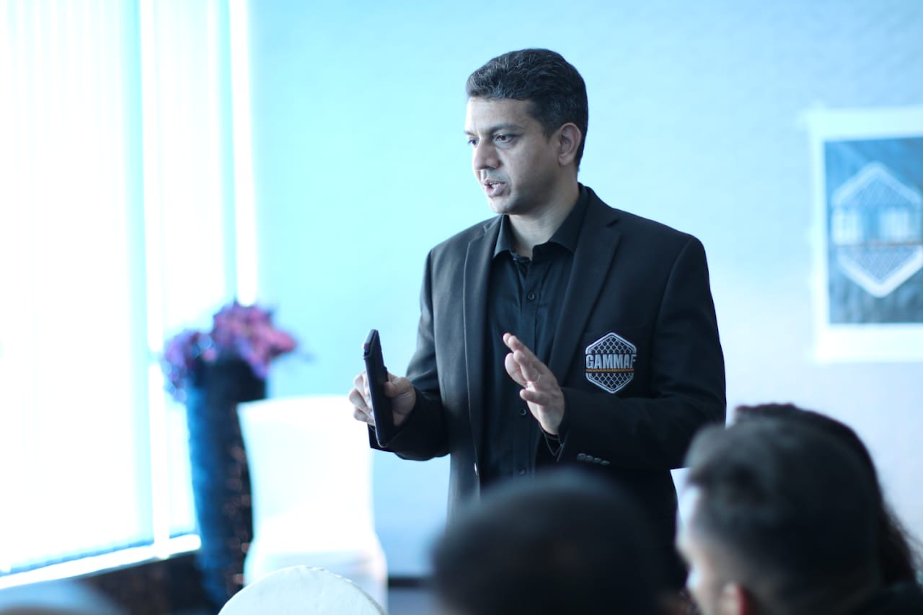

As a businessman and entrepreneur Dan Isaac has managed and promoted combat sports athletes both amateur and professional since the year 2000. He was the first Indian martial artist to think outside the box and create a business module for himself promoting fighters as well as providing a source of part-time income for Indian fighters who competed as professionals. As a martial arts consultant he has worked with MSM (later renamed to SPN: Sony Pictures Networks India) and Super Fight League.

As a full time Instructor and coach, Dan has taught martial arts and self defense to thousands of students across the world since 1990. As a martial arts fitness instructor he has taught classes both for group and personal training in India and the United States.
Prior to moving to the United States he led the company that hosted the first ever India vs Pakistan MMA show in Dubai, UAE. In 2015 he trained and certified martial arts and sports officials in the Kingdom of Bahrain and worked as a consultant with them to host their first ever MMA championships which in turn helped them to create their own federation for Mixed Martial Arts. Dan Isaac is one of India's pioneering martial arts entrepreneurs now settled in the United States.